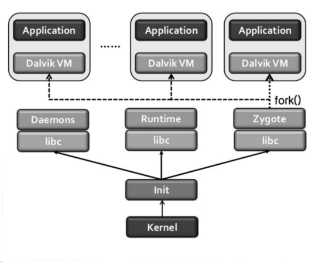

|

|
As mentioned, every application runs on a single instance of the Dalvik Virtual Machine.
Zygote is the process that make the creation of new DVM instace efficient.
-
The Boot-loader loads the kernel and start init process.
-
Starts Zygote process.
-
Initializes a Dalvik VM which preloads and pre-initializes core library classes.
-
The system keeps in an idle state the process until the execution request.
-
Once an application execution request occurs, Zygote forks itself and create new process with the pre-loaded Dalvik VM.
|